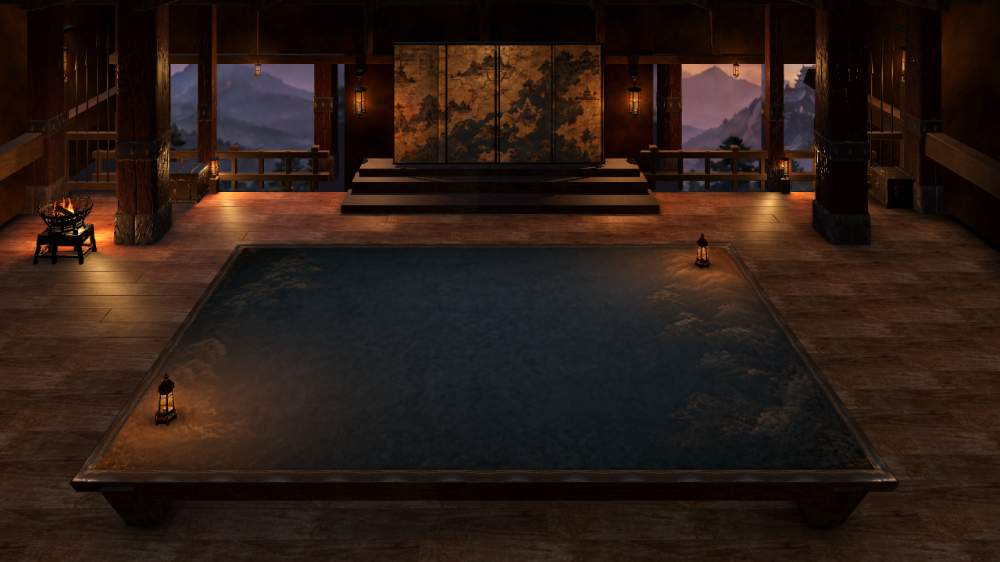
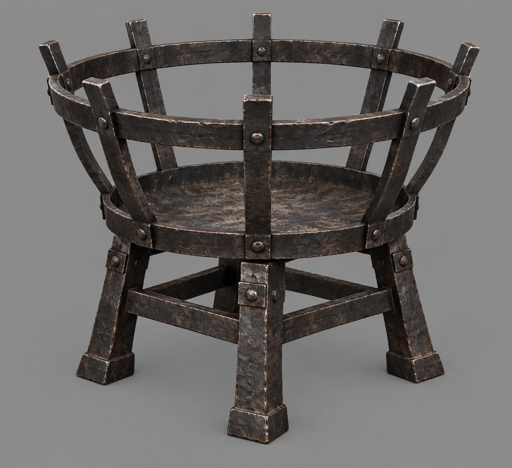
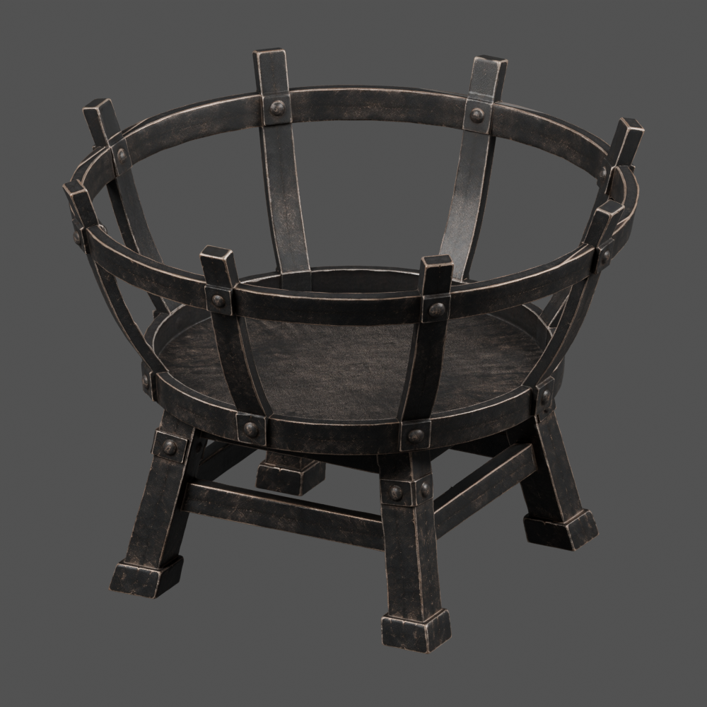
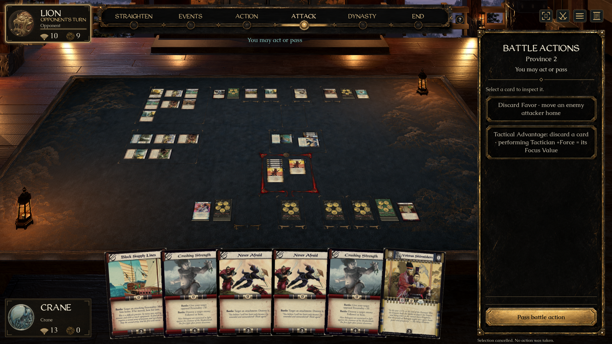
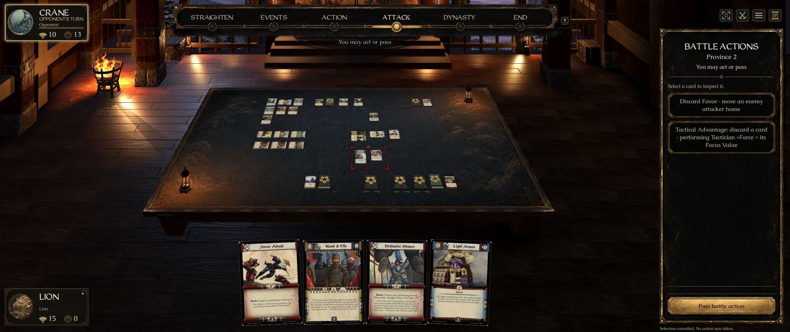
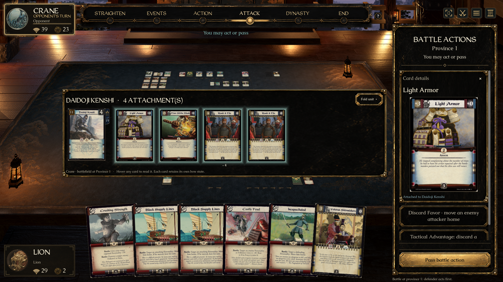
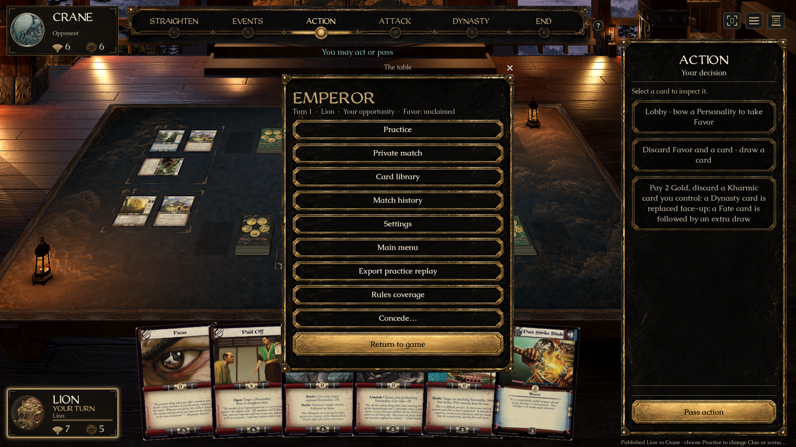
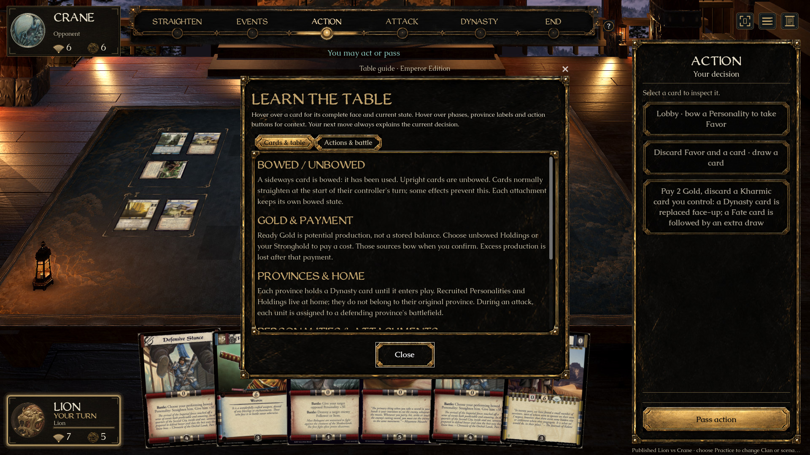

L5R · FORTRESS HALL · MILESTONE 06
Iron, fire and dusk
A rebuilt brazier, a darker timber floor with localized firelight, and a sharper mountain vista. These are native Godot captures and Blender inspection renders; the approved sparse, chair-free layout is preserved.
Play Latest · Validation record · Draft PR #234
The brazier · before / after
Previous native buildCurrent native build
The room · before / after
Previous native buildCurrent native build


Approved composition and native room
 Approved chair-free reference. Painted game cards belong to the concept.Native isolated comparison camera. Actual game/card camera shown below.
Approved chair-free reference. Painted game cards belong to the concept.Native isolated comparison camera. Actual game/card camera shown below.Source → Meshy → Blender

Detailed reference derived with imagegen.
Original Meshy reconstruction inspected in Blender · 344,296 triangles.Cleaned export · 120,000 triangles · original PBR maps retained.Firelight in motion
Layered fire, seated coal bed, rising embers and pan shadows.Room and floor firelight. Reduced motion freezes all phases.
The actual game

Original card projection and restored worn black lacquer sidebar.
Wide window / native edge-selection check.
Expanded unit in battle.
Worn black lacquer menu.
Table guide, Caudex and WeatheredQuill retained.Review milestone, not a claim of pixel-identical reconstruction. The live game preserves its established card scale; the wider comparison camera is separate. The vista is a high-resolution matte, fire uses layered animated artwork, and bounce light is a Blender floor bake with local modulation. Motion clips are deterministic native frame sequences, not a real-time FPS benchmark. Native Windows graphical testing remains open.